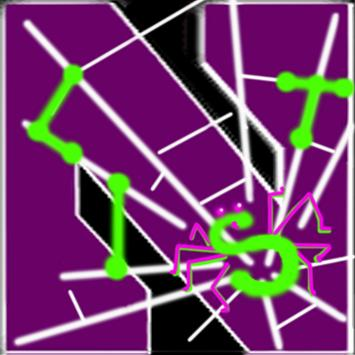

 实验室情况介绍
主要研究方向为网络和系统安全、软件安全。
NEWS
热烈祝贺实验室第博士生冷雪同学顺利毕业并入职华为杭州研究所。(2020年8月)
热烈祝贺实验室博士生金羚的论文 MAdLens: Investigating into Android In-App Ad Practice at API Granularity 被计算机网络领域 CCF-A 类期刊 IEEE Transactions on Mobile Computing (TMC) 录用。(2019年11月)
热烈祝贺实验室博士生李振源的文章 Effective and Light-Weight Deobfuscation and Semantic-Aware Attack Detection for PowerShell Scripts 被网络与信息安全领域顶会 2019 ACM SIGSAC Conference on Computer and Communications Security (CCS'19) 录用并赴英国伦敦参会并汇报工作。(2019年11月)
热烈祝贺实验室博士生朱添田同学顺利完成毕业答辩，找到浙江工业大学的教职。(2019年6月)
热烈祝贺实验室第一个博士生何博远同学在海外完成一年的博士后研究后入职华为杭州研究所。(2019年6月)
热烈祝贺实验室本科实习生董伟豪，最终被UC Berkeley计算机科学硕士项目录取（2019年秋天）。该同学在留学申请中收到了来自UC Berkeley, CMU, USC, NWU 等名校的录取通知。该同学从大三开始加入实验室，参与Advanced Persistent Threat攻击检测项目，并负责一块独立的工作。
热烈祝贺实验室博士生朱添田同学的论文 RiskCog: Unobtrusive Real-time User Authentication on Mobile Devices in the Wild 在计算机A类期刊IEEE Transactions on Mobile Computing 上录用并发表（2019）。
热烈祝贺实验室博士生李星同学的论文 Thinking inside the Box: Differential Fault Localization for SDN Control Plane 被计算机网络领域会议 IFIP/IEEE International Symposium on Integrated Network Management录用（2019）。
热烈祝贺实验室博士生冷雪同学的论文SDNKeeper: Lightweight Resource Protection and Management System for SDN-based Cloud 被计算机网络领域会议 IEEE/ACM IWQoS录用（2018）。
热烈祝贺陈焰老师被评选为IEEE Fellow（2017）。
热烈祝贺实验室博士生朱添田同学的论文Beating the Artificial Chaos: Fighting OSN Spam using Its Own Templates在计算机网络领域A类期刊IEEE/ACM Transactions on Networking上录用并发表（2016）。
热烈祝贺实验室博士生何博远同学以学生身份应中国计算机学会（CCF）互联网专业委员会（CCF TCI）邀请，作为特邀演讲嘉宾参加第四届中国互联网学术年会（ICOC2015），并作“如何做高水平的研究和准备高水平的论文”的发言，研究成果获得同行学者的高度评价。
热烈祝贺实验室本科实习生张振瑞同学被Carnegie Mellon University计算机科学硕士项目录取。该同学在留学申请中，一共收到了来自 Carnegie Mellon University（计算机科学，计算数据科学）， University of Pennsylvania， Columbia University， Yale University，University of Southern California，University of Toronto和University of Waterloo共7所北美名校的录取通知，其中University of Toronto与University of Waterloo两所大学提供奖学金。张振瑞同学从大三下学期开始加入实验室，从事程序语言分析相关的课题研究，是信息安全领域顶级会议IEEE S&P 2015论文Vetting SSL Usage in Applications with SSLINT的作者之一，并在实验室完成了本科毕业论文。
热烈祝贺实验室本科实习生陈铭业，最终被Columbia University计算机科学硕士项目录取。该同学在留学申请中收到了来自Carnegie Mellon University，Columbia University，University of Southern California等名校的录取通知。该同学从大三开始加入实验室，顺利完成计算机学院第28期大学生科研训练计划并取得了不错的成果。
热烈祝贺实验室博士生何博远同学的论文Vetting SSL Usage in Applications with SSLINT 被信息安全领域国际顶级学术会议IEEE Symposium on Security & Privacy 2015录用。这是浙大首次在信息安全领域国际顶级学术会议上发表论文，实现了零的突破。同时，浙大也成为继北大（2010年），清华（2014年）之后，大陆第三家（与中科院信息工程研究所并列）在该会议上发表论文的科研机构。IEEE Symposium on Security & Privacy（IEEE S&P）创办于1980年，是信息安全领域历史最悠久的国际顶级学术会议。该会议以评审严格著称，近5年录用率均在12%左右，是信息安全领域四大国际顶级学术会议（IEEE S&P, ACM CCS, NDSS, USENIX Security）中最低的一个。 何博远同学的工作是在陈焰教授的指导下，由来自哥伦比亚大学，美国西北大学，伊利诺伊大学芝加哥分校等多家单位的作者合作完成。团队长期以来致力基于程序语言分析技术的软件漏洞的自动化检测研究。利用静态代码分析技术，实现了基于程序依赖图结构的自动化漏洞扫描及定位。通过对SSL证书认证漏洞进行建模，成功在数百万行开源软件代码中找到了27个0-day漏洞。这些漏洞主要集中在IRC客户端，邮件客户端等应用程序中，给用户隐私安全造成了严重的威胁。目前，所有漏洞均已提交开源社区，部分已得到修复。
团队简介
团队负责人陈焰教授是IEEE Fellow，浙江省移动终端安全工程实验室主任, 浙江大学网络空间安全研究中心学术委员会共同主任。2013年被邀请为中国互联网企业安全工作组学术委员会成员。陈焰教授于2003年12月获得UC Berkeley计算机科学博士学位。 现同时为Northwestern University（US News & World Report排名全美第十二）电子工程与计算机科学系终身教授, 2012 年创立浙大-西北联合互联网安全实验室并任主任。2005年获得美国能源部青年成就奖（Early CAREEA Award），2007年获得美国国防部青年学者奖（Young Investigator Award）。2004和2005年两度获得Microsoft可信计算奖（Trustworthy Computing Awards）。2010年获计算机网络顶会ACM SIGCOMM 最佳论文提名, 和2018年系统顶会 ACM ASPLOS 最具影响力论文奖。 担任 ACM/IEEE ToN的副主编及等多个著名国际会议程序委员会主席，并担任ACM CCS 2011主席。截至2018年10月，Google Scholar显示，论文总引用过万次，H-index指数为49。
团队主要成员卜凯，副教授。于2013年获香港理工大学电子计算学系博士学位，加入浙江大学任计算机科学与技术学院。主要研究方向为无线网络及网络安全，曾获得IEEE/IFIP EUC 2011 Best Paper Award (第二作者)。
交流合作：本团队与Northwestern University（美国）互联网安全技术实验室有密切合作。基本上所有项目都有双方学生共同参与合作研究。本实验室的博士生也会到美方实验室访问1-2年。详见http://list.cs.northwestern.edu.
获奖信息
祝贺李星获得国家奖学金（2016-2017学年）。
祝贺朱添田获得中国互联网发展基金会网络安全专项基金网络安全奖学金（2017）。